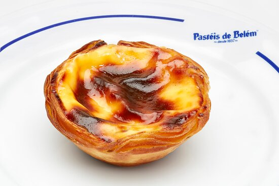

Pastel de Belem

Description
The Portuguese custard tart, known as pastel de nata, is a beloved pastry originating from Lisbon.
These tarts feature a flaky, buttery crust filled with a rich, creamy custard made from egg yolks,
sugar, and cream. Baked at high temperatures, the custard caramelizes on top, creating a distinctive
golden-brown, slightly blistered surface.
Traditionally enjoyed with a dusting of cinnamon and powdered sugar, pastéis de nata are a popular
treat in Portugal and beyond. Their unique combination of textures—crispy pastry and smooth custard—makes
them a delightful indulgence, perfect for enjoying with a cup of coffee or tea.
Ingredients
For the Pasteis de Nata dough:
- 2 cups minus 2 tablespoons all-purpose flour, plus more for the work surface
- 1/4 teaspoon sea salt
- 3/4 cup plus 2 tablespoons cold water
- 2 sticks (8 oz) unsalted butter, room temperature, stirred until smooth
For the Custard:
- 3 tablespoons all-purpose flour
- 1 1/4 cups milk, divided
- 1 cinnamon stick
- 2/3 cup water
- 1/2 teaspoon vanilla extract
- 6 large egg yolks, whisked
For the Garnish:
- Confectioners’ sugar
- Cinnamon
Steps
-
Preheat Oven: Preheat to 375°F (190°C).
-
Cook Meat Sauce: Brown 1 lb meat with 1 chopped
onion and 3 minced garlic cloves. Add 2 cans tomato
sauce, 1 can tomato paste, 1 can diced tomatoes, 1 tbsp sugar,
and seasonings. Simmer for 30 minutes.
-
Cook Noodles: Cook 12 lasagna noodles according to package instructions.
Drain.
-
Prepare Cheese Mixture: Mix 4 cups shredded cheese with 1 beaten egg.
-
Assemble Lasagna: In a 9x13 inch dish, layer meat sauce, noodles,
cheese mixture; repeat layers, ending with sauce and remaining cheese.
-
Bake: Cover with foil and bake for 25 minutes. Remove foil and bake 25 more minutes.
Cool for 15 minutes before serving. Enjoy!